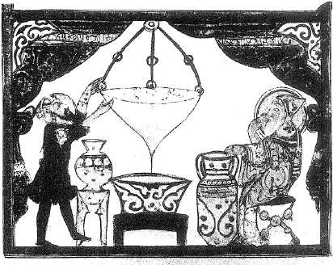

ŞEKİL 46. Dioskorides’in De materia medica’sından hareketle 1222 yılında Bağdat’ta hazırlanan bir Kitab el-Haşâyiş nüshasından, Abdullah ibn el-Fazl tarafından yapılmış minyatürde, öksürüğe karşı hazırlanan kokulu şurubun süzülmesi: Burada başındaki büyük hâleden saygın bir yetke olduğu anlaşılan hekimin denetiminde, yalnızca süsleme amacıyla başına hâle çizili olan eczacı şurup süzmektedir. Büyük torba süzgeçten aşağı akan süzüntü, alttaki büyük bir fayans kâse içinde toplanmakta, her iki yandaki diğer kapların da fayans olduğu görülmektedir. Böyle sırlanmış çömlekçi işi kapların gelişimi, İslâm kültürünün özgün katkısıdır. Avrupa’da ise fayans çok geç ortaya çıkmıştır. Bu resmin yer aldığı elyazması, Birinci Dünya Savaşı’ndan önce sayfalar halinde sökülmüş ve değişik yerlere dağıtılmıştır. Bu resmin korunduğu Kiev’deki Batı ve Doğu Sanatları Müzesi dışında diğer kimi sayfalar, Boston’daki Güzel Sanatlar Müzesi’nde ve New York’taki Metropolitan Müzesi’nde bulunmaktadır.42
Ödağacı (“Aloexylon agallochum / Aquilaria agallocha”), halk arasında özellikle kokusu nedeniyle kullanılır. Mevlitlerde çörekotu (çöreotu), üzerlik, göztaşı, günlük, anber kabuğu ve ödağacı karışımı, mangal, buhurdan ya da ateş dolu bir kürek içinde yakılarak kokusundan yararlanılır. Ayrıca hasta olan kimse, bunun dumanına tutulur bu dumanın hastadaki her türlü kötülük unsurunu uzaklaştırdığına inanılır. Ödağacı, İslâm tıbbında cenaze törenlerinde de kullanılır.57
De materia medica’nın resimli ilk nüshalarındaki resimler, gerçekçi olmaktan çok dekoratiftir. Eserde örnek olarak “nasturtium” (burun büktüren) bitkisini betimleyen Dioskorides, onu bir süs bitkisi olarak değil de hardal ailesinden bir tür tere olarak kategorize etmiştir. Bunun tohumlarını bir afrodizyak olarak önermiş ve kısımlar halinde, bağırsak kurtlarını düşürücü (“anthelmintic”) ve saç dökülmesini önleyici ilaç olarak da kullanılabileceğini belirtmiştir.49 Eser, 9. yüzyılda Kitab el-Haşâyiş fî Heyûlât el-Tıbb adıyla Arapçaya çevrilmiş ve hızla farmakologların başvurduğu kaynak haline gelmiştir. Bu yapıtın etkisi, Ali ibn Rabban el-Taberî’nin (780-850) Firdevs el-Hikme’sinde (Bilgelik Bahçesi) hemen görülebilir. El-Râzî’nin (“Rhases”) (864-930) Kitab el-Hâvî fi’t-Tıbb’ında (Tıbbı Kapsayan Kitap) de bundan alıntılar vardır. 9. yüzyıldan başlayarak birçok Arap ülkesinde sayısız kez çevirileri yapılan ve kopyalanan eser, bolca bitki resimleri ve ayrıca da bitki dışı konuları yansıtan güzel minyatürlerle süslenmiştir. Eserin, 13. yüzyıldan sonra yazılmış yüzden fazla kopyası vardır.
“Eczacı” karşılığı olarak Arapça “ıtr” (güzel koku) sözcüğünden gelen “attâr” sözcüğü, halk Türkçe’sinde “aktar” şeklinde kullanılır ve bunlar, halk sağlığıyla her zaman için resmî hekimlerden daha fazla içli dışlı olmuşlardır. Bugün bile, geleneksel aktarlar, müşterilerinin günlük istemlerinin çoğunu karşılamakta ve henüz onmazlık kazanmamış hastalıklar için çeşitli ecza ve reçeteler hazırlamaktadırlar. Aktarın, çoğu geleneksel tıp ilaçları olan çeşitli eczalar ve özellikle de şifalı bitkiler konusundaki bilgisi oldukça kapsamlıdır ve gerek tıbbî gerekse ekonomik açıdan oynadığı rolün önemi büyüktür. İslâm dünyasında halk pazarlarında adasoğanı, adamotu, baldıran, haşhaş, yılan eti ve göztaşı, ilaç niyetine satılırdı.
Ortaçağın en sevilen ilaçlarından biri, Arapça’da tiryak, Latince’de ise teryak (“theriaca” < Yun. “thério”: yaban hayvanı) diye anılan, 12 ilâ 64 çeşit madde karışımından hazırlanan ve veba hastalığı ile yılan zehirlemesi başta olmak üzere genelde tüm zehirlere iyi geldiği sanılan ilaçtı.
İslâm tıbbında kullanılan ilaçların çoğu bitkiseldir. Hiç kuşkusuz eczacılık, botanik ile yakından ilgilidir, ayrıca birçok bakımdan simya ile de ilgilidir, hattâ tedavi malzemesi olarak hayvanlardan üretilen ilaçlar da göz önüne alındığında, zooloji ile de ilgilidir.
Sâsâniler çeşitli ilaçlar, özellikle şifalı bitkiler konusunda kapsamlı bilgiye sahipti ve hattâ Yunanca’da Pehlevî dilinden gelme eczacılık terimleri bulunmaktadır. Hint tıbbı ise şifalı bitkilerin zengin dünyasının yanı sıra Yunanlılarınkinden çok farklı şekilde, tedavi malzemesi olarak minerallerin kullanımı bakımından da zengin kaynaklara sahipti. Hint tıbbında ilaç olarak çeşitli parfüm ve zehirlerden de yararlanılmaktaydı. Daha sonraki gelişmeler sırasında Müslümanların, hazırladıkları ilaç listesinde kâfur ve demirhindi gibi Eski Yunan kaynaklarında rastlanmayan pek çok bitkisel ilaca yer verdiği görülür. Arapça’da “temr-i hindî” (“hint hurması”) şeklinde geçen bu meyve Araplarda müshil olarak kullanılmış ve Batı kültürüne de geçmiştir (> Lat. “Tamarindus indica”; İng. “tamarind”, Fra. “tamarin”, Alm. “Tamarinde”). Bu ilaçların Yunanlılarca tanınmamasının nedeni, Müslümanların Yakındoğu ve Uzakdoğu kaynaklarına da erişebilmesi ve klasik Yunan kaynaklarının tanımadığı bitki örtüsü (flora) ve hayvan varlığına (fauna) sahip bölgelerde yaşamış olmalarından başka bir şey değildir.
İlaç yapılan maddelerin çeşitleri alabildiğine çoğalıp ilaç yapmada geliştirilen yeni teknikler yepyeni ilaçların ortaya çıkmasına neden olunca ve ilaç çeşitlerinin hazırlanmaları daha uzun zaman isteyince, hekimlik ve eczacılık mesleklerinin birbirinden ayrılması zorunlu hale gelmiştir. Hekimler hastanelerde hazırladıkları ilaçları denerler, sonuçlarını “Denenmiş İlâçlar” (Ar. “mücerrebât / mücerreb devâ”) adı altında yayınlayarak tıp dünyasının kullanımına sunarlardı.
İslâm dünyasında eczacılık (“saydana”) bağlamında özel eczanelerin 9. yüzyılda Bağdat ve yakınlarındaki kentlerde açılıp geliştiği görülür. Bu eczanelerde eczacıların işlerini başarıyla yürüttüğü, karışım ilaç hazırlama, depolama ve koruma bilgilerine sahip olduğu, ilaç hazırlama konusunda bilgili ve becerili olduğu anlaşılmıştır. Devlet destekli hastanelerdeki eczaneler, ilaç üretim laboratuvarlarıyla bağlantı halinde idi ve bu laboratuvarlarda şuruplar, macunlar, merhemler ve diğer ilaçlar, özel eczanelere oranla daha büyük ölçekte hazırlanıyordu. Eczacılar ve dükkânları, devletin görevlendirdiği muhtesipler ve yardımcıları tarafından, ilaçların ölçü ve ağırlıkları, tazeliği ve saf olup olmadıkları konusunda denetleniyordu.
Arap eczacılığına katkı koyan kişilerden biri Yuhanna ibn Mâseveyh (Yahya ibn Mâsuyeh, “Johannes Mesuë”) (777-857) idi. Aralarında esmer amber ve gâliyenin de yer aldığı yaklaşık 30 koku maddesinin listesini vermiş, onların fiziksel özelliklerini ve içine yabancı katkı maddeleri karıştırılıp karıştırılmadığını belirleyen yöntemleri belirtmiştir. Kâfurun vatanının Çin olduğunu, bir ağaçtan kristal madde halinde üretildiğini ve Hindistan üzerinden Arabistan’a sevk edildiğini; safran’ın karaciğer ve mide rahatsızlıklarına iyi geldiğini; sandal ağacının en iyisi sarı olmak üzere beyaz ve kırmızı renklerde de olabildiğini, Hindistan’dan sağlandığını ve parfüm üretiminde kullanıldığını belirtir. İbn Mâseveyh hastalıklara tıbbî yaklaşımlarında çok az sayıda bilinen tıbbî bitkilerin kullanımını önermiş, bunda da öncelikle bedende hastalıklara karşı doğal bir direnç oluşturmayı hedeflemiştir. Ampirik yolla ve benzerlik ilişkisi içinde akıl yürütmelerle belirli bir hastalık için tek tür bir ilaç kullanılmasını hekimlere önermiş ve sonunda, ilaç kullanmadan yalnızca diyet (beslenme düzeni) uygulayarak tedaviyi gerçekleştirebilen bir hekimin, en başarılı hekim olacağını söylemiştir. El-Müseyyer el-Kebîr adlı kitabı hastalıkların, onlar için kullanılacak ilaç ve beslenme düzenlerinin çizelgelenmiş bir tıp ansiklopedisi niteliğindedir.
Ünlü hekim Ali ibn Rabban el-Taberî (780-850) birkaç tıp kitabı yazmışsa da en ünlüsü Firdevs el-Hikme (Bilgelik Cenneti / Bilgelik Bahçesi) (~850) olup Arapça ve Süryanice dillerinde kaleme alınmıştır. Bunda insan doğası, kozmoloji, embriyoloji, mizaçlar, psikolojik tedavi, sağlık koruma, beslenme düzeni, akut ve kronik hastalıklar ve tedavileri, tıbbî anekdotlarla (kısa anlatı) Hint tıp kaynaklarından özetler ve alıntılar yer alır. Eserde ayrıca “materia medica”, tahıllar, beslenme, çeşitli hayvanların ve kuşların çeşitli organlarının ve drogların yararları ve tedavi amaçlı kullanımı ile ilaç hazırlanması gibi konulara ilişkin kısımlar da vardır. El-Taberî’nin ilaç kullanımı konusundaki önerisi, her bir özel duruma uygun olarak özel bir drogun tedavi edici özelliğinden yararlanılması olup, ilacı uygulayacak hekimlerin basit ilaçların en iyisini seçmesi şeklindedir. Sıvı haldeki drogların saklanması için cam ya da seramik kapları, sıvı göz merhemleri için özel küçük kavanozları, yağlı merhemler için de kurşun kapları önermiştir. 1 miskal’lik (~4 g) afyon ya da banotu dozunun uykuya, hattâ ölüme yol açabileceği uyarısında bulunmuştur.
İbn Sina’nın Kitab el-Kanun fi’l-Tıbb (Tıp Kanunu) adlı ünlü eserinde tam 760 çeşit ilaç ve bunların kullanıldıkları yerler kayıtlıdır (ŞEKİL 47). Bunların çoğu, Arapça adlarıyla birlikte Avrupa eczacılığına geçmiştir: Örneğin İngilizcede ‘amber’ (Ar. “anber”, amber), ‘cinnamon’ (tarçın), ‘saffron’ (safran), ‘sandalwood’ (sandal ağacı), ‘senna’ (sinâmeki), ‘campfor’ (kâfur), ‘aloe’ (sarısabır), ‘hashish’ (haşiş, esrar), ‘galingale’ (havlıcan) vb. Haşhaş bitkisi (“Papaver somniferum”), uyuşturucu afyon (“Opium”) maddesinin kaynağıdır. Haşhaş bitkisinin Latince adındaki “somniferum” terimi, “uyutucu” anlamına gelmektedir. Sümerler İÖ 3200’lerde haşhaş bitkisini kültüre almışlardı. Hitit tabletlerinde “haşşişka”lı (haşhaşlı) ekmekten söz edilmektedir. Haşhaş kapsüllerinin çizilmesiyle akan süt toplanarak afyon (“Opium”) elde edilir. Afyon, aralarında morfin, kodein, tebain, narkotin, papaverin vb.nin yer aldığı 24 çeşit alkaloit içerir. Bazmorfin, morfin (“Morphium”) ve eroin (3,6-diasetil morfin) ise afyonun türevleridir. Esrar (İng. “hashish”), insanoğlunun tarihin çok eski dönemlerinden beri tanıdığı bir preparat olup sanrı yapıcı (“hallucinogen”) bir maddedir. Kenevirin reçine türü olanı, kendir otu ya da hintkeneviri (“Cannabis sativa var. İndica”) adını alır ve bunun yapraklarının kıyılmasından marihuana, çiçek özünden ise esrar elde edilir. İÖ 2700’lerde “Kızıl İmparator” diye anılan söylencesel Çin İmparatoru Shen-Nung (İÖ 2700’ler), yazdığı Ben Cao Jing (Şifalı Bitkiler Kitabı) adlı kitabında kenevirden söz etmiştir. Asurlular, Hititler, İskitler ve Uygurlar da bu bitkiyi tanımakta ve ilaç olarak kullanmaktaydı. Çinli cerrah Hua T’o (115-205), esrarı ilk kez anestezi maddesi olarak kullanmıştır. İsmailîlerin şeyhi ve Haşîşîlerin (Haşşâşîler) lideri Hasan Sabbah (“Dağın Şeyhi” / “Seyyidnâ”) (ölm. 1124), rakiplerine suikast düzenlemek için müritlerine esrar ya da afyon verirdi. Araplar da esrarı fıstık, tarçın, karabiber, şeker ve başka maddelerle karıştırarak “devâ-i misk” adı verilen macunu hazırlarlardı. Esrar elde etmek için hintkeneviri toplanıp toz haline getirilir ve elenir. Bu ilk elekaltı üründe etken madde oldukça boldur ve uyuşturucu argosunda “birinci mal” olarak adlandırılır. Eleğin üstünde kalan esrara ise marihuana denir. Geri kalan diğer artıklar çok az etkili madde içerdiklerinden argoda “paspal” adını alırlar. Afyon ve türevleri uyuşturucu (“depressant”), esrar ve marihuana sanrı yapıcı (“hallucinogen”); “Coca” bitkisinden üretilen kokain ise uyarıcı (“stimulant”) olarak nitelenir. Esmer amber ya da gri amber (Fra. “ambre gris”), ısı altında kolay eriyen, yandığı zaman parlak bir alev veren ve misk gibi kokan bir nesne olup ispermeçet balinasının (kaşalot balığı ya da amberbalığı) (“Catodon macrocephalus” ya da “Pyseter catadon”) safra keselerindeki bir salgıdan oluşarak bağırsaklarında toplanır ve kusmuk yoluyla denize atılır; deniz üstünde yayılarak dalgalarla kıyıya vurur ve oradan toplanır. Bu güzel kokulu madde ilaç karışımlarında da kullanılırdı. Başta Doğu Asya kıyıları olmak üzere denizciler tropik deniz kıyılarında yüzen bu maddeleri toplayarak getirir ve yüksek fiyata satarlardı. Açık ve koyu renkli türleri olup koyu renklisi, güzel koku elde edilmesi için buhurdan içinde yakılırdı.98, 107 Amber ağacı ise çınarı andıran bir ağaç olup kabuğunun altında açılan yaralardan kokulu ve kıvamlı bir reçine akar. Toplanan bu reçineden, kaynatılarak süzülmek suretiyle sığla yağı (“Styrax liquidus”) denilen ve eczacılık ve parfümeride kullanılan bir yağ elde edilir. Şeytan keneviri bitkisinin tohumlarından da amber benzeri bir koku maddesi elde edilir. Kâfur, “kâfir otu” (“Cinnamomum camphora”) denen hoş kokulu bir bitkinin odunundan damıtmayla saydam kristaller halinde elde edilir; ya da Hint Denizi’nde ve Çin dağlarında yetişen bir ağacın zamkı olup rengi başlangıçta kırmızı iken suyu uçurulup beyazlatılarak elde edilir.7 Köken ülkesi Çin olup kristale benzer bir görünümü vardır.